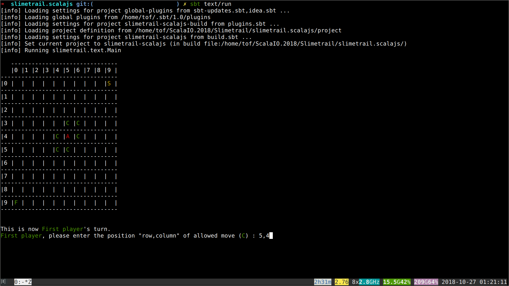

The Slimetrail Text App
- Recommended time to spend on this part: 5 minutes
- Recommended finishing before: 10:00am
A text interface similar to the web one you used to far has been realized. To get it clone the following git repository:
git clone https://github.com/chrilves/slimetrail.scalajs.git -b ScalaIO.2018
cd slimetrail.scalajs
sbt text/run
You should see something like this:

The project is divided into three sbt modules:
textimplements the text user interface.slimetrailimplements the game's logic.toolboxdefines various useful things.
Do not modify any file under the toolbox, slimetrail and text directories!!!
Note that text does not include any game logic and slimetail does not include any interface code. This strict isolation is crucial to make things work.
Run the following commands to generate the scaladoc for the text, slimetrail and text projects.
sbt toolbox\docsbt slimetrail\docsbt text\doc
Now open the generated documentations in your browser.
The Game Loop
- Recommended time to spend on this part: 10 minutes
- Recommended finishing before: 10:10am
The execution of the game follows a simple and widespread technique:
- A data structure, the
GameState, represents the possible states of the game. - On every user
Action, the gameupdatethe current state to reflect the changes made by theAction. - On every state change, the game renders the new state on the screen.
More generally an application defines a type Model which represents the states the application can take. It also defines a type Msg which represents the events that make the application to transition from the current state to a new one. This new state is computed using the function update based on the current state model and the event message. The view function is responsible of rendering the current state on the screen and producing a message from user inputs.
All of this is summarized in the following two traits which represents an application. Take a close look at how the run procedure works.
trait Application {
type Model
val initialModel: Model
type Msg
def update(message: Msg, model: Model): Model
}
trait TextApplication extends Application {
def view(model: Model): Msg
final def run(): Unit = {
@tailrec
def loop(model: Model): Unit = {
val msg: Msg = view(model)
val nextModel: Model = update(msg, model)
loop(nextModel)
}
loop(initialModel)
}
}
The Slimetrail application is implemented by the class SlimetrailTextApp. Note that the Model is GameState and events are Action.